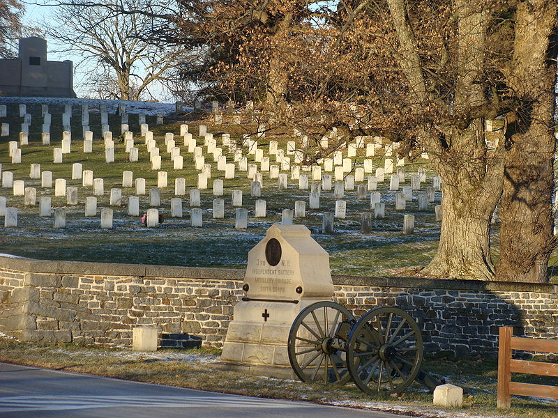

|
The Battle of Gettysburg inflicted about 51,000 casualties.
Many left with their regiments, but those who remained in
the town were cared for in 113 makeshift hospitals which had
been set up in schools, churches, houses and public
buildings. The small town of 2,400 people was overwhelmed.
The dead were most often buried in shallow graves with
crude, temporary identification markers. Rain and wind
threatened to uncover them and this caused a problem which
|

Gettysburg National Cemetery, as it appears today
|
was as unsanitary as it was dishonorable. Realizing that
steps had to be taken to correct the situation, Pennsylvania
governor Andrew Curtin appointed Gettysburg attorney David
Wills to study the problem of finding a suitable burial site
and to report as soon as possible. Wills did so, and with
the permission of Curtin and officials from the 17 other
Northern states which had dead here, purchased 17 acres on
Cemetery Hill for $2,475.87 At the same time a contract was
signed which arranged for the dead to he removed--at a cost
of $1.59 per body--from temporary battlefield graves and
reburied in the new cemetery.
Superintendent of Exhumations Samuel Weaver (who was also
a Gettysburg photographer) supervised the identification and
transfer of bodies beginning in the fall of 1863 and
continuing into the next year. In all, 3,512 were reburied
at that time; 979 were completely unknown and 1,664 were
partially unknown.
Each soldier was placed in a simple pine coffin and
buried in the cemetery with his head pointing toward the
center of a semi-circle. There are now 22 sections with
Identification markers giving what sparse information was
available. As in battle, each man whose name or home state
was ascertainable is buried beside the men lie knew in life
as lie marched across the fields in Gettysburg.
The National Cemetery was dedicated on November 19, 1863,
while the process of reinterment was continuing. During the
dedication ceremonies President Lincoln delivered his
immortal Gettysburg Address.
No Confederates were eligible to be buried in the
National Cemetery; it was intended only for Union dead.
However at least two Confederates rest in the cemetery,
buried here by mistake. They are Ninon F. Knott, of Co. F,
2nd Maryland Battalion, and John L. Johnson, who was
mistakenly buried in the Massachusetts section. Johnson
fought in the 11th Mississippi, not the 11th
Massachusetts.
Source: Megan Quinn for the History 139A website
|